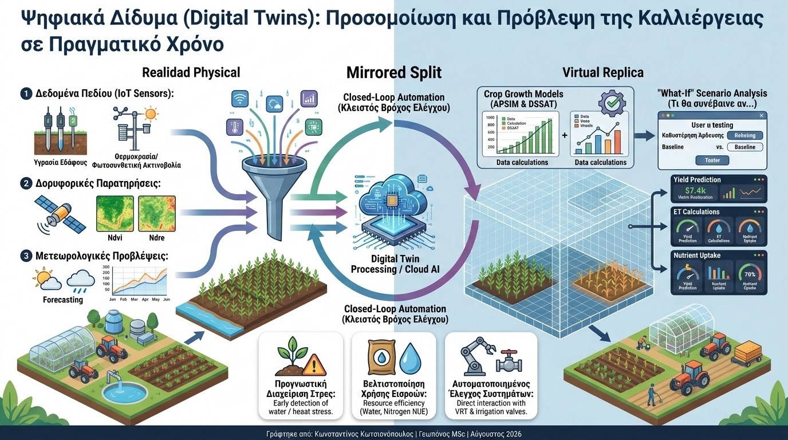

Η εξέλιξη της Γεωργίας Ακριβείας (Precision Agriculture) προς τη Γεωργία 5.0 χαρακτηρίζεται από τη μετάβαση από την απλή παρατήρηση του παρελθόντος στην προγνωστική προσομοίωση του μέλλοντος. Η πιο καινοτόμος προσέγγιση σε αυτό το πεδίο είναι η ανάπτυξη των Ψηφιακών Διδύμων (Digital Twins - DTs). Ένα Ψηφιακό Δίδυμο στη γεωργία αποτελεί ένα δυναμικό, εικονικό αντίγραφο ενός πραγματικού αγροτεμαχίου ή θερμοκηπίου, το οποίο ενημερώνεται συνεχώς με δεδομένα πεδίου και προσομοιώνει τις βιολογικές και φυσικές διεργασίες της καλλιέργειας.
Η αρχιτεκτονική ενός αγροτικού Digital Twin στηρίζεται στη σύζευξη τριών βασικών πυλώνων: των δικτύων αισθητήρων IoT (υγρασία εδάφους, θερμοκρασία, φωτοσυνθετική ακτινοβολία), των δορυφορικών παρατηρήσεων (δείκτες βλάστησης NDVI/NDRE) και των μηχανιστικών μοντέλων ανάπτυξης καλλιεργειών (Crop Growth Models), όπως το APSIM και το DSSAT. Ενσωματώνοντας μετεωρολογικές προβλέψεις, το ψηφιακό μοντέλο εκτελεί υπολογισμούς για την εξατμισοδιαπνοή, την πρόσληψη αζώτου και τη φωτοσύνθεση σε πραγματικό χρόνο.

Η πραγματική ισχύς του Ψηφιακού Διδύμου έγκειται στη δυνατότητα εκτέλεσης σεναρίων "What-If" (Τι θα συνέβαινε αν...). Ο γεωπόνος ή ο παραγωγός μπορεί να δοκιμάσει εικονικά διαφορετικές στρατηγικές διαχείρισης πριν τις εφαρμόσει στο χωράφι. Για παράδειγμα, μπορεί να αξιολογήσει την επίδραση μιας καθυστέρησης στην άρδευση κατά τρεις ημέρες ενόψει επικείμενου καύσωνα ή να εξετάσει πώς μια συγκεκριμένη δόση αζώτου θα επηρεάσει την τελική στρεμματική απόδοση υπό διαφορετικά κλιματικά σενάρια.
Τα επιστημονικά τεκμηριωμένα πλεονεκτήματα της χρήσης Digital Twins στη βιώσιμη γεωργία περιλαμβάνουν:
- Προγνωστική Διαχείριση Στρες: Έγκαιρος εντοπισμός υδατικού ή θερμικού στρες προτού εκδηλωθούν ορατά μακροσκοπικά συμπτώματα στο φύλλωμα, επιτρέποντας στοχευμένη πρόληψη.
- Βελτιστοποίηση Χρήσης Εισροών: Η ακριβής μοντελοποίηση της δυναμικής του αζώτου και του νερού μειώνει τις απώλειες λόγω έκπλυσης, εξασφαλίζοντας μέγιστη αποδοτικότητα χρήσης θρεπτικών στοιχείων (NUE).
- Αυτοματοποιημένος Έλεγχος Συστημάτων: Άμεση διασύνδεση με αυτόνομες ηλεκτροβάνες και συστήματα μεταβλητής δόσης (VRT), κλείνοντας τον βρόχο ελέγχου (closed-loop automation) χωρίς ανθρώπινη καθυστέρηση.
Τα Ψηφιακά Δίδυμα μετατρέπουν τη γεωργική παραγωγή σε μια επιστήμη βασισμένη σε προηγμένες προσομοιώσεις δεδομένων. Για τον σύγχρονο γεωπόνο, η κατανόηση και η αξιοποίηση των ψηφιακών αντιγράφων αποτελεί το κορυφαίο εργαλείο για τη διασφάλιση της επισιτιστικής ασφάλειας και την προσαρμογή των καλλιεργειών στις πιέσεις της κλιματικής αλλαγής.